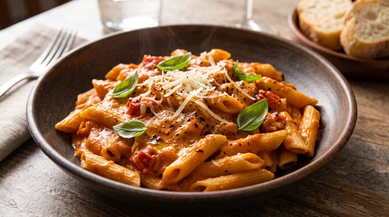

AI-powered recipes
Your ingredients. Endless possibilities.
Find your next favorite meal or create a recipe with AI.
Or generate a recipe with AIRecently searched
-

-

-


What’s in your kitchen?
Turn the ingredients you have into something delicious.
Browse by category
How it works
-
Add your ingredients
Tell us what you have in your kitchen.
-
Generate with AI
Get a recipe tailored to your ingredients and preferences.
-
Cook and enjoy
Follow the steps and save your favorites.